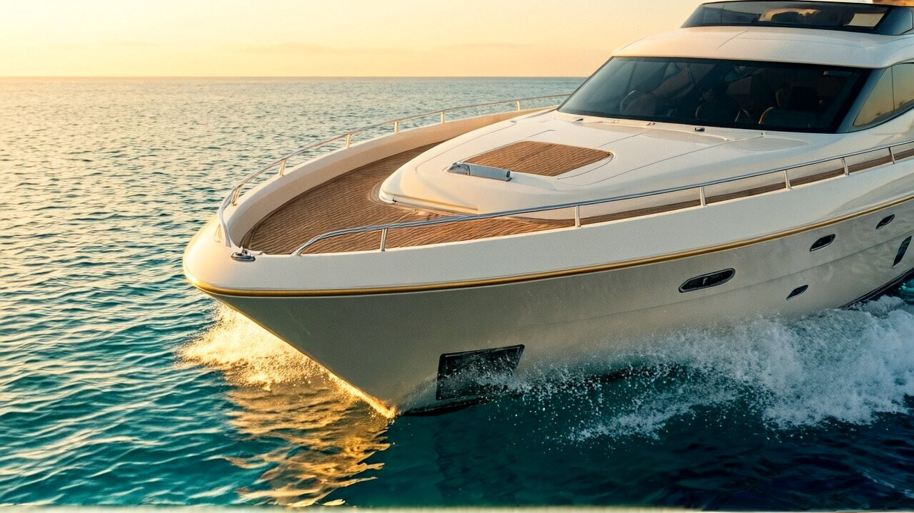
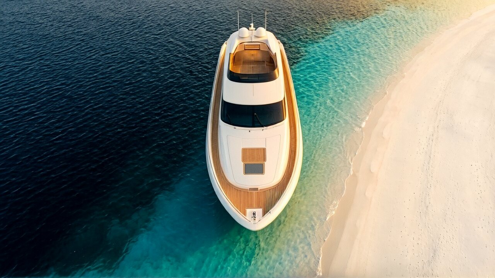
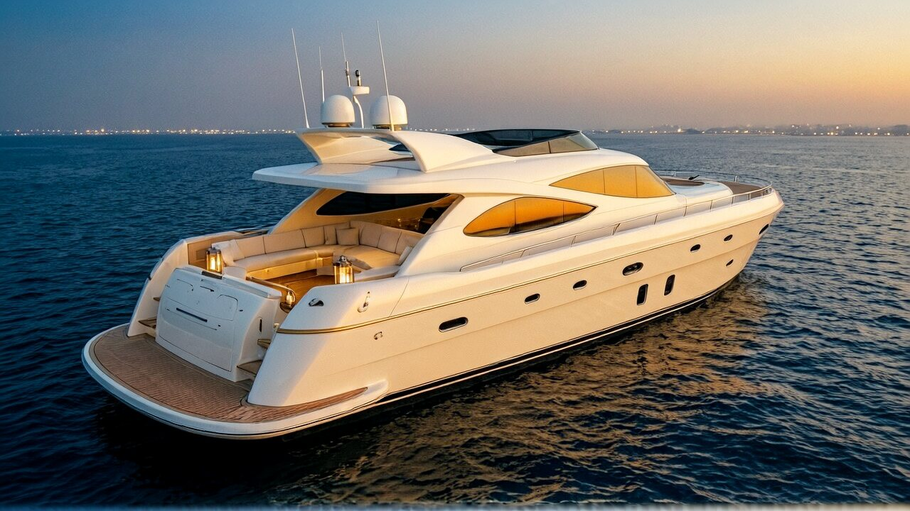
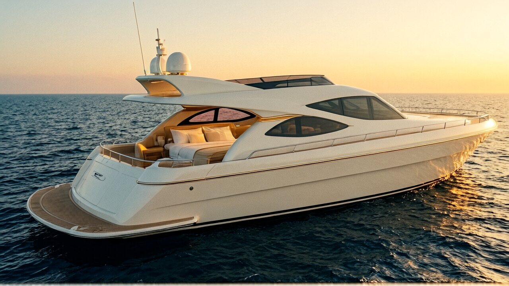
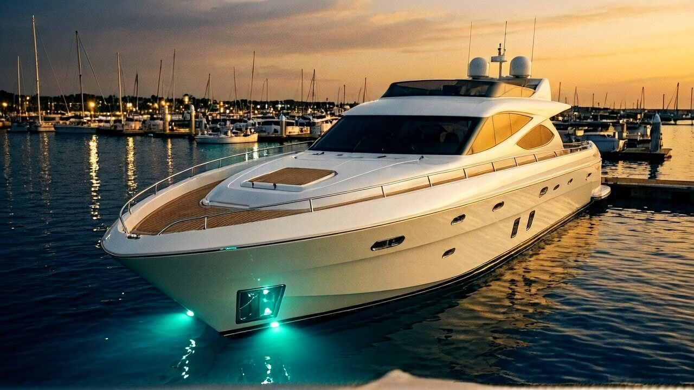
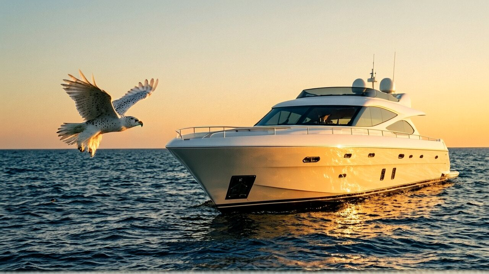
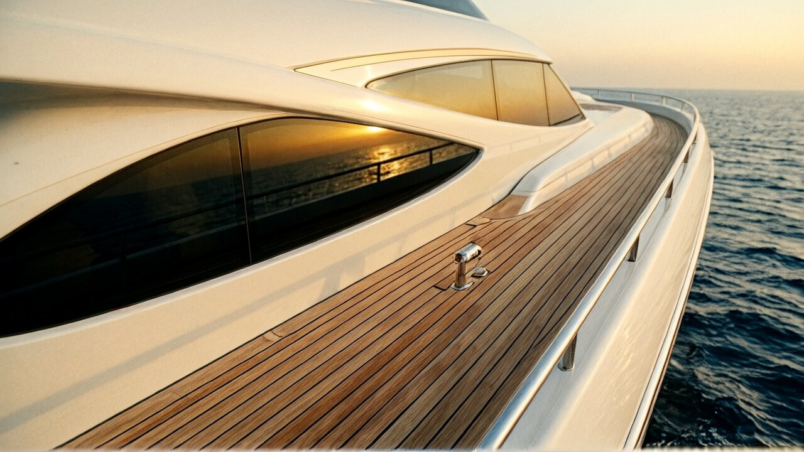
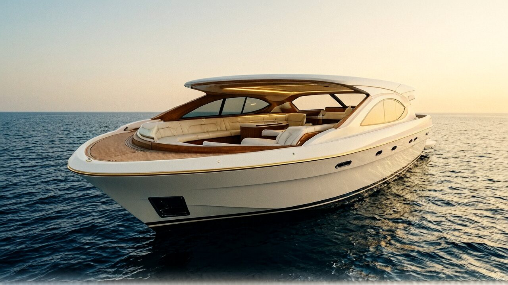
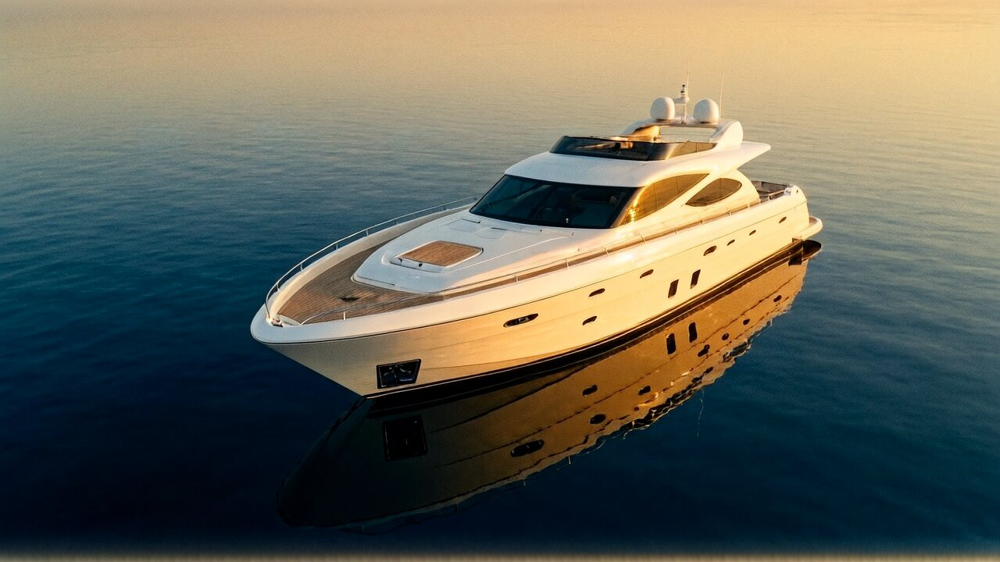

Twenty-four metres of ivory and teak, built for the Gulf's calm evenings and its long, bright mornings.
Request a private viewingThe yacht
A single gold sheer line runs bow to stern. Tinted glass wraps the salon. Teak covers every deck you'll walk on barefoot. Everything else stays out of the way.
A day aboard




Anchor over a sandbank before the heat. Water so clear the hull's shadow sits on the sand.

Glide
Nor does Nawras fight the water. A deep-V hull and stabilisers keep the deck level, so coffee stays in the cup at twenty knots.
Details


